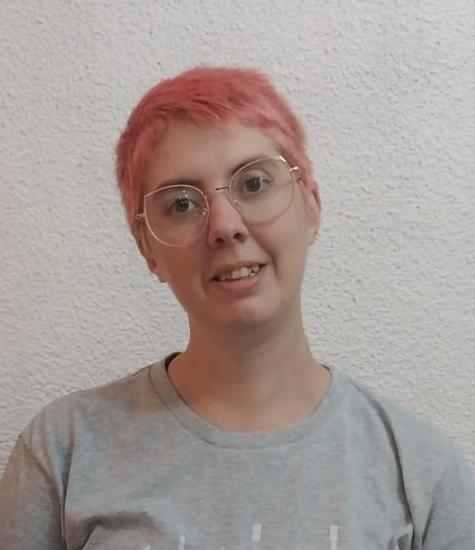

Anker Díaz Nocera
DATA ANALIST
¡Hola! Me llamo Anker Díaz Nocera, uso pronombre neutro (elle/le). Soy le humane de un gato, Ridikulah. Actualmente vivo en la ciudad de Córdoba, Argentina. Mi ruta de aprendizaje en programación ha sido mayormente autodidacta, aunque actualmente curso la Tecnicatura Superior en Desarrollo de Software, y una diplomatura universitaria en Análisis de Datos. Las áreas que más me interesan son data analist y data science, y como hobbie hago jueguitos.
